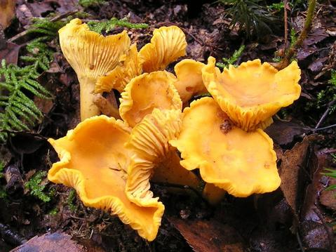

Chanterelles are some of the most prized edible mushrooms. They grow throughout Vermont and have never been successfully cultivated because cultivators are unable to replicate the symbiotic mycorrhizal relationship that the chanterelle mycelium forms with surrounding trees. They typically grow under oaks and conifers, often in large patches. The young fruitbodies start with convex caps which flatten and then become cup-shaped with age. Gills ascend up the stalk. Instead of picking a large crop all at once, it is better to pick only those mushrooms that are mature and almost gone-by, since the mature fruits can double in size from when the cap first becomes convex. The mushrooms pictured are not quite ready for picking. Even people unfamiliar with mushroom hunting can look for chanterelles because of the relative ease and safety of identification (they are a distinct bright orange without any close and harmful look-alike).
Although these are choice and expensive mushrooms (retailing for around $60 per dry pound), they are not in danger from over-harvesting. As soon as mushrooms reach maturity, they begin to drop spores which are quickly whisked away by the wind, sometimes traveling miles. The main body of the fungus, the mycelium, actually lives underground. A mushroom hunter is only picking the part of the fungus that distributes spores. Even so, they should be careful not to damage the underlying mycelial network. Cutting the mushrooms at the base of the stem is the desirable for this. It also eliminates the extra work of brushing dirt off the base of the stem.
Socially and culturally, mushroom hunting is a great activity. People can go for fun forays into the woods. There they can walk alongside folks familiar with all types of mushrooms, learning as they go. You can learn all you want about the species, but you will have to find your own patches, since they are usually kept secret. Mycological clubs organize these kinds of events; in Vermont there are the Vermont Mycology Club in Burlington and the Northeast Kingdom Mushroom Society. The state is also full of mushroom growers of other species. Many people are familiar with fungi, having learned from their parents and friends, and will be happy to take any newcomer into the woods.
